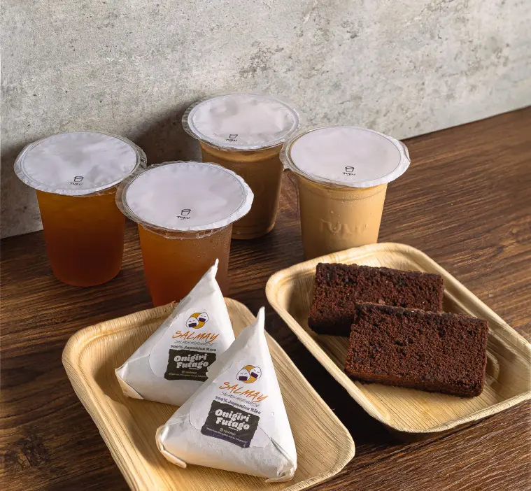
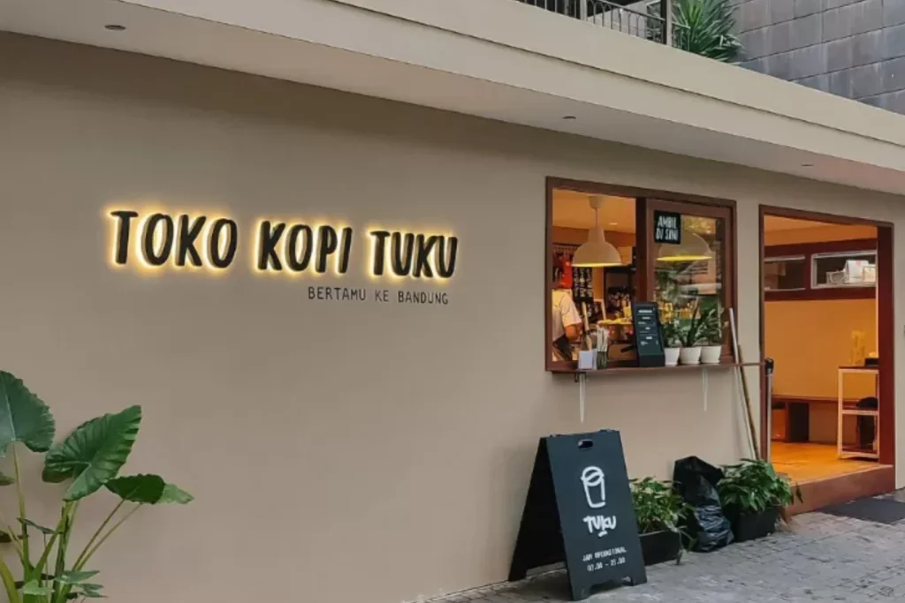

EST. 2015
Kopi Tetangga
Kaya Cerita.
Hadir lebih dekat untuk menemani keseharian. Bukan sekadar rasa, tapi cerita dan kehangatan dalam setiap seduhan es kopi susu tetangga.

Kopi Susu Tetangga
Selalu sedia untuk harimu.

Suasana hangat kedai terdekat
TUKU ARCHIVE